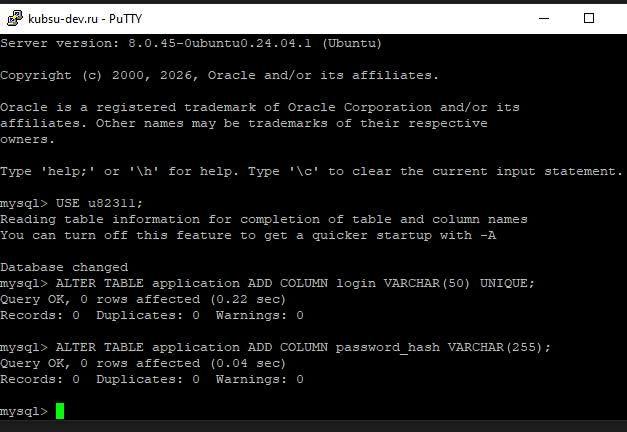
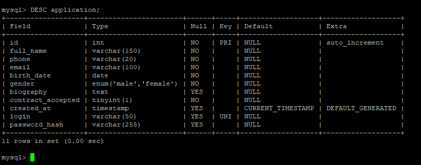

🔹 1. Создание структуры БД
Спроектированы таблицы в третьей нормальной форме: language (языки программирования), application (анкеты), application_language (связь многие-ко-многим). Скрипт выполнен в MySQL.



Таблицы соответствуют требованиям: language содержит 12 языков, application – поля анкеты, application_language связывает записи.
🔹 2. Размещение кода на сервере через Git
Локальный репозиторий инициализирован, файлы добавлены и запушены на GitHub. На учебном сервере выполнено клонирование.


Все файлы проекта (index.php, form.php, v.php, db.php, style.css, p.html) успешно загружены в каталог ~/www/rw3/.
🔹 3. Валидация и сохранение анкет
Форма на index.php отправляет POST-запрос на сервер. Выполняется проверка каждого поля (ФИО, телефон, email, дата, пол, языки, биография, согласие). При успехе данные записываются в БД с использованием подготовленных запросов (prepared statements).

На скриншоте видно, что несколько анкет успешно сохранены (поля: ФИО, телефон, email, дата рождения, пол, биография, согласие). Языки программирования хранятся в связанной таблице application_language.
🔹 4. Страница просмотра сохранённых анкет
Реализована страница v.php, которая выводит все записи из БД с объединением языков через GROUP_CONCAT. Ссылка на неё находится внизу формы.